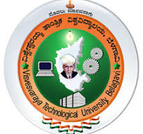
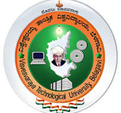

Welcome to the Computer Science Engineering Department
Welcome to the Computer Science Engineering Department at Government Engineering College Hassan. Our department is dedicated to providing students with a solid foundation in computing principles and cutting-edge technology. We strive to foster a culture of innovation, research, and practical learning. And with placement offers.
About Our Department
Our Computer Science Engineering program is designed to equip students with essential skills in software development, data analysis, and system design. We offer a range of undergraduate and postgraduate courses that cater to the evolving demands of the tech industry. Our faculty consists of highly qualified professionals with extensive experience in both academia and industry. And we will train to the students to our best.
Why Choose Us?
- State-of-the-art laboratories and facilities.
- Opportunities for research and internships.
- Strong industry connections and collaborations.
- Active student organizations and events.
- Comprehensive career services and placement support.
- There is a good friendly connections between us and students.
- Last year 70% of students has been placed in many different companies.
Campus Life
Our campus is designed to provide a vibrant and stimulating environment for students. From modern classrooms and well-equipped laboratories to recreational areas and student lounges, we ensure that our students have access to all the resources they need for a balanced academic and personal life. We are having a warst architecture of our campus. We are having different blocks for libary, workshop, sports, training centers.
Gallery
Academic Programs
Research
Overview of research areas and labs.
Publications and research projects.
Funding opportunities and partnerships.
Admissions
Apply for undergraduate and graduate programs.
Admission requires the original documents.
Every intake will be done befre the deadlines.
Financial aid and scholarships information.
Visit CSE GECH.gov.in
Staffs
HEAD OF THE DEPARTMENT
Dr. Vani V G
B.E, M.Tech, Ph.D.
Head of the Department, Dept. of CS&E, GEC-HASSAN
Teaching staffs
Mrs. Shylaja N S
BE, M.Tech
Assistant Professor, Dept. of CS&E, GEC-Hassan
Dr. Vasantha Kumar M
B.E, M.Tech, Ph.D.
Assistant Professor, Dept. of CS&E, Placement Officer GEC-HASSAN
Mr. Annaiah H.
B.E., MTech.
Assistant Professor, Dept. of CS&E, GEC-Hassan
Dr. Thirthe Gowda. M.T.
B.E., MTech.
Assistant Professor, Dept. of CS&E, GEC-Hassan
Mr. Kiran M P
B.E., MTech.
Assistant Professor, Dept. of CS&E, GEC-Hassan
Contact and Visit
Contact us at Department for any queries.
Directions to our Department second flour, near heart of GECH.
Virtual tour.
About Us
The Government Engineering College Hassan (GECH) was established in 2007 by the Government of Karnataka. Located in the picturesque city of Hassan, the college aims to provide quality technical education and produce skilled professionals in the field of engineering and technology. The Computer Science Engineering Department at GECH is committed to excellence in teaching, research, and community service.
History and Mission: Since its inception, GECH has been dedicated to fostering a culture of innovation and research. The mission of the college is to empower students with the knowledge and skills necessary to meet the challenges of the rapidly evolving tech industry.
Vision and Goals: The vision of GECH is to become a center of excellence in engineering education, recognized globally for its academic rigor and contributions to the technological community. The college aims to cultivate a supportive learning environment that encourages intellectual growth and ethical practices.
Faculty and Staff Directory: The Computer Science Engineering Department is home to a diverse and talented faculty, including experienced professors, dedicated lecturers, and knowledgeable support staff. Together, they provide students with a comprehensive education that combines theoretical knowledge with practical application.